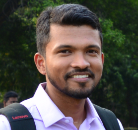

Post-Doctoral Researcher |
 |
D6-002, UPC Campus Nord |


Abhijit Das
 I am hiring a PhD student to join our group as a researcher in computer architecture. If you are interested, check out the offer.
I am hiring a PhD student to join our group as a researcher in computer architecture. If you are interested, check out the offer.
About
I am a Post-Doctoral Researcher in the N3Cat group of UPC BarcelonaTech, hosted by Dr. Sergi Abadal. Previously, I was a Post-Doctoral Researcher in the TARAN team of INRIA. Prior to that, I was a Senior Silicon Design Engineer at AMD, where I was part of the performance modelling team that designed the Zen microarchitecture.
I received the prestigious Best PhD Thesis Award in Computer Science & Engineering from Indian Institute of Technology (IIT) Guwahati, India, where I was supervised by Dr. John Jose. My dissertation focused on the design of data-aware on-chip networks to improve the performance of many-core systems. One of my works presented at ICCD 2020 can be found here, and an extended abstract/summary of my dissertation presented at DAC PhD Forum 2021 can be found here.
My broad area of research is Computer Architecture, and I frequently collaborate with Dr. Maurizio Palesi of University of Catania, Italy and Prof. Prabhat Mishra of University of Florida, USA. Currently, I am involved in multiple projects that focus on the design of efficient on-chip networks, caches and DNN accelerators.
I work with the gem5 simulator and have recorded multiple tutorial videos to get started with it. My videos have one of the highest number of views (29K+) on YouTube among all the gem5 simulator based tutorials. Anyone interested in learning the gem5 simulator may consider checking some of the videos here.
Recent News
25-10-2023 : I am guest editing a special issue of IEEE JETCAS
07-08-2023 : I am organising a Panel Discussion at NOCS 2023
18-06-2023 : I am invited to serve as the Program Chair of NoCArc 2023
06-03-2023 : I have joined the N3Cat group of UPC BarcelonaTech
02-03-2023 : Our paper is accepted at ADOPT@IPDPS 2023
26-09-2022 : I am invited to serve as the Virtual Logistics Chair of NOCS 2022
18-08-2022 : Our paper is accepted at NoCArc@MICRO 2022
06-07-2022 : Our paper received the Best Student Paper Award at ISVLSI 2022
24-06-2022 : I am invited to serve as the Publicity Chair of NoCArc 2022
17-06-2022 : My dissertation received the Best PhD Thesis Award at IIT Guwahati